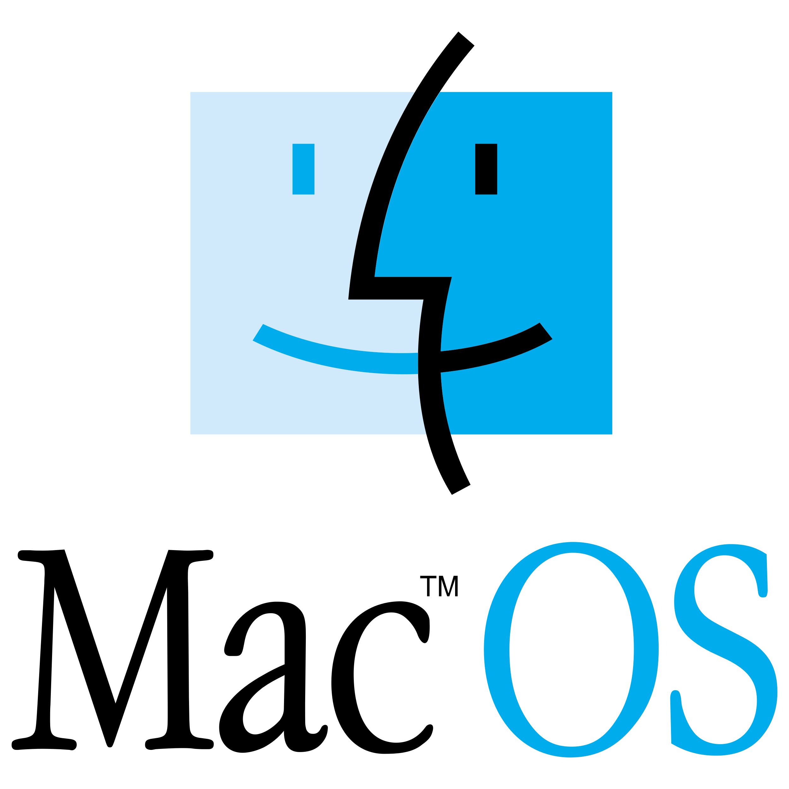

HTML
HTML, short for HyperText Markup Language, is the standard markup language used for creating web pages and applications. It provides the structure and organization of content on the World Wide Web. HTML uses a set of tags and attributes to define the elements and their attributes within a web page

CSS
CSS, which stands for Cascading Style Sheets, is a style sheet language used in web development to describe the presentation and formatting of a document written in HTML. CSS allows developers to control the appearance of HTML elements on a web page, including their layout, colors, fonts, sizes, and other visual aspects.

JAVASCRIPT
JavaScript is a programming language used in web development to make websites interactive and dynamic by handling user interactions, manipulating content, and communicating with servers.

LINUX
Linux is an open-source operating system kernel that serves as the foundation for various Linux-based operating systems. It was initially developed by Linus Torvalds in 1991 and has since become one of the most popular operating systems for a wide range of devices, including servers, desktop computers, mobile devices, and embedded systems.Linux is known for its stability, security, and flexibility.

MAC OS
Mac OS, now known as macOS, is the proprietary operating system developed by Apple Inc. specifically for their Macintosh line of computers. It is designed to provide an intuitive and seamless user experience, tightly integrated with Apple's hardware and software ecosystem.
macOS is built upon a Unix-based foundation, known as Darwin, which incorporates a Mach kernel and various open-source components. It offers a combination of a graphical user interface (GUI) and a command-line interface (CLI), providing users with flexibility and ease of use.